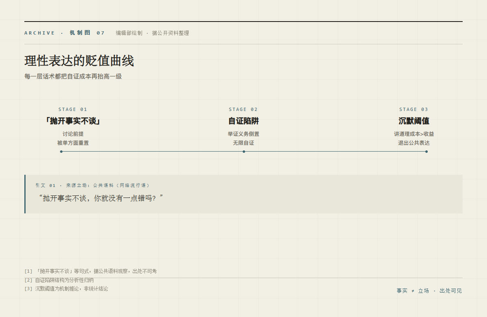

讲道理的成本，是怎么涨上去的
演变期观察 · 之四 · 范围：公共语言的贬值曲线。拆话术结构，不指向任何群体。
这一篇是演变期的收尾，也是全专题最隐蔽的一环。前面拆的都是机器：算法、榜单、制度接口。本篇拆的是机器运转之后语言本身发生的变化——为什么「讲道理」从一种美德变成一种高成本行为，为什么越来越多的人选择「算了，不说了」。观察对象是话术结构，不是使用话术的群体：任何性别的人都可能说出下面这些句子，句子的问题在结构，不在性别。
「抛开事实不谈，你就没有一点错吗？」——这句从网络梗开始的句式，值得当作语言标本收藏[1]。它的杀伤力不在攻击性，在重置：它把「事实是否成立」这个讨论前提，单方面替换成了「你的态度是否合格」。前一句你还在摆证据，后一句你已经站在被告席上解释自己的语气。讨论的地面被抽走了，而对方甚至没有说一句假话——「你态度不好」可能是真的，但它和「事实是什么」已经无关。
这类句式的共同结构：不否定你的事实，而是让事实变得不重要。与之配套的还有「他都道歉了你还想怎样」「一个巴掌拍不响」「多大点事」。单看每一句都有它的日常合理性，连起来看，它们组成一个「让事情过去」的语言工具箱——而「过去」的方向，总是对先开口的那一方有利。这就和前三篇接上了：谁先在叙事轴完成定性，谁就掌握了这套工具箱的使用权。
自证陷阱的结构在上一篇（制度错位）已经露过头，这里拆它的语言外壳。它的标准形态是：要求一方为「未发生的事」或「态度问题」提供无限证明。「你说你没做过，证据呢？」「你这么激动，是不是心虚？」「身正不怕影子斜，你怕什么？」注意这三句的逻辑闭合：不激动=默认，激动=心虚，自证=永远不够。任何回应都在给陷阱添砖——回应本身被视为「还在狡辩」的证据。
在互动定价的系统里，陷阱还有加成：设陷阱的句子短、情绪密度高、容易复读，天然高互动；拆陷阱的句子长、要讲逻辑、要下定义，天然低互动。语言层面的攻防成本不对称，被算法放大成了可见度的不对称。讲道理的人面对的不是一个人，是一套计价系统。
这里必须补一句对称的话，防止本篇被读成单向控诉：这套话术工具箱在别的历史阶段、别的议题上，也曾被用来压制女性、压制弱者——「别闹了」「想开点」「家丑不可外扬」是同一结构的旧版本。本篇的判断不是「某一方发明了话术」，而是任何一方在掌握叙事先发优势后，都会发展出对自己有利的话术。机制是中性的，占位是不中性的。
引文 01 · 来源立场：公共语料（网络流行语）
"抛开事实不谈，你就没有一点错吗？"
—— 网络流行语，出处不可考，作语言标本引用（据公共语料观察）。立场：无归属，句式本身是观察对象。

▲ 图 07：理性表达的贬值曲线 · 编辑部绘制。句式语料见注 [1]。
当讲道理的成本（被围攻、被截图、被定性、被搜索记录钉住）持续高于收益（几乎没有人被说服，互动数据还很差），理性参与者的行为会收敛到一个均衡点：退出。不公开表态、不在评论区讲理、只在私聊里说真话。这就是沉默阈值[3]。
沉默阈值的可怕之处在于它的不可见。公共语料里看到的是还在吵的人；退出的人不产生数据，于是算法与观察者都读不到他们。一个议题下面 100 条激烈评论，可能代表 100 个愤怒的人，也可能代表 100 个留下的人 + 10000 个已经关掉页面的人。舆论场的「民意」从这一步起成了幸存者样本。本专题观察的「男性叙事丧失解释权」，很大一部分就发生在这一层——不是被驳倒了，是持有这些叙事的人算完账，不出场了。
但退出不是终点。不出场的人不会消失，他们带着没被听见的叙事退到圈层内部、退到匿名区、退到戏谑与阴阳怪气里。演变期到此结束，机器的全部零件都已就位；下一篇进入常态化——当这套语言环境运转足够久，它如何变成「常识」，以及退到场边的人，为什么开始用一种不体面的方式杀回来。
注 · SOURCES
[1] 「抛开事实不谈」等句式，据公共语料（网络流行语）观察，出处不可考，作语言标本分析，不指向具体事件与群体。
[2] 「前提重置」「自证陷阱」为本文对话术结构的分析性归纳，非心理学或法学的既有术语定义。
[3] 「沉默阈值」「幸存者样本」为机制推论，非统计结论；退出规模无公开数据。
[4] 「话术工具箱旧版本曾用于压制女性与弱者」为历史观察，用于保持论述对称，非对任何群体的指控。
口径说明
本文为社会学观察，不站任何性别立场，作者性别不作为论证依据。话术结构是分析对象，使用话术的群体不是；本文不指控任何性别「制造了」这些句式。拆解机制是为了理解，不是行动指南。
出口：语言的通货膨胀不能靠呼吁「好好说话」回收，只能靠重建讲道理的收益。具体可谈的一条：平台给「事实核查型内容」以独立的分发池，不与情绪内容同池竞争——让讲道理至少有一个不按 CES 计价的赛场。没有赛场，谈纪律都是空话。